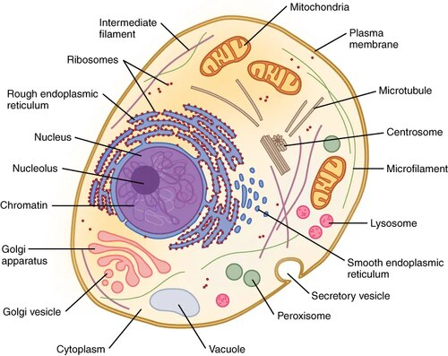
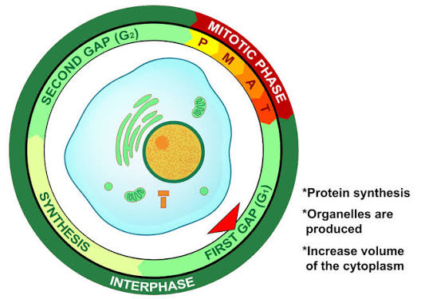
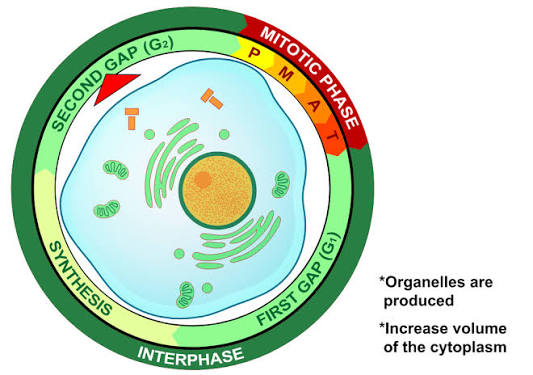
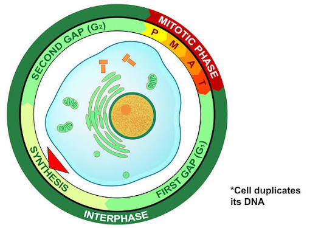
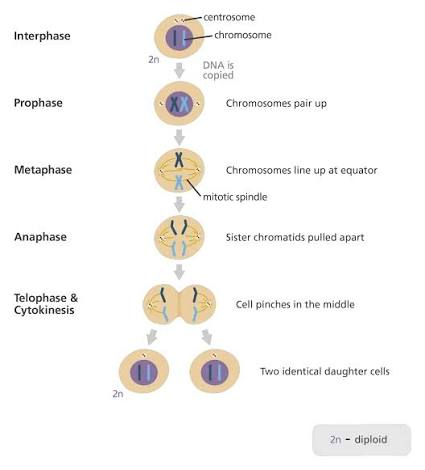
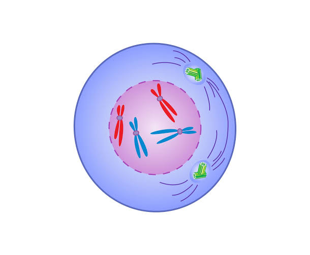
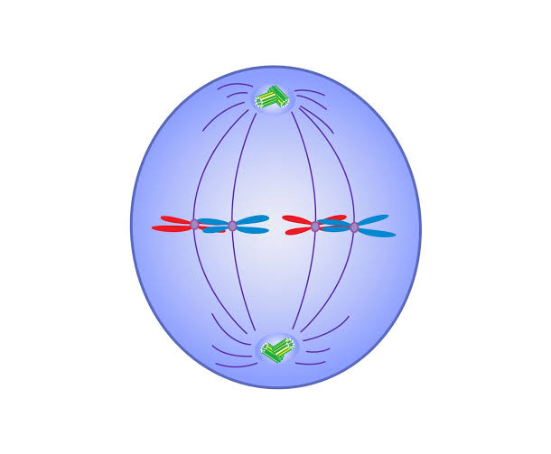
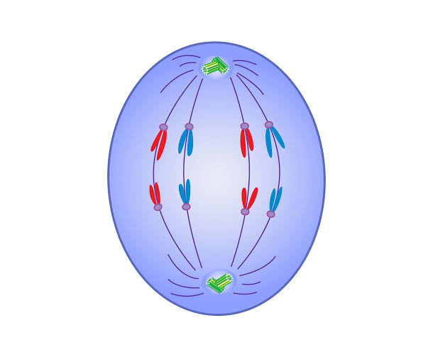
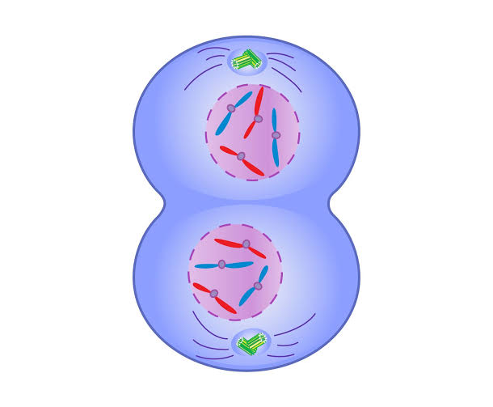

The Cell Cycle is the series of steps a cell goes through as it grows, copies it's DNA and divides
it essentially reproduces asexually
Assuming these xenomorphs know what we're saying. This is how he grow, and this is the foundation for all life

The Cell Cycle is the series of steps a cell goes through as it grows, copies it's DNA and divides
it essentially reproduces asexually
Assuming these xenomorphs know what we're saying. This is how he grow, and this is the foundation for all life
The Process goes
Interphase to Mitosis to Cytokenesis
Interphase - Cell grows and prepares to divide
Mitosis - The process the cell goes through wehn dividing
Cytokenesis - The cytoplasm divides, creating 2 sister cells

This is when the cell gros, performs normal functions, copies DNA and prepares for Mitosis
G1-Growth 1: Cell grows, functions normally, makes proteins copies orgenelle, and prepares to copy DNA

G2-Growth 2: Cell grows more, proteins are needed for division, Final preperations for Mitosis, checks if ready for Mitosis

Synthesis: DNA is copied, chromosoms become 2 sister chromatids, sister chromatids are connected at the centromere

Mitosis involves the division of a cell's nucleus to make two identical daughter cells

As the image shows, Mitosis is a multi step process

Prophase is the first phase of Mitosis
DNA coils up into chromosomes in this phase
Nuclear envelope also break down
Spindle Fibers form

Metaphase is the second phase of Mitosis
During this phase spindle fibers connect to centromeres
Chromosomes begin lining up to the middle of the cell

Anaphase is the third phase of Mitosis
In this phase Sister Chromatids begin to pull away from each other
The Chromatids pull to opposite ends

Telophase is the final phase of Mitosis
Chromosones start to decondense and start to look more like chromatin again during the phase
Nuclear membrane re-form around chromosomes
Spindle fibers break down
Two cellls have formed
This is known as cytokenesis
Research text here, need to acquire, somehow. great...